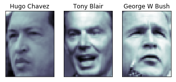
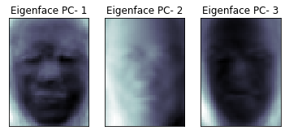
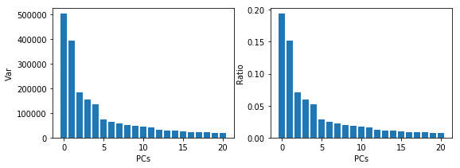
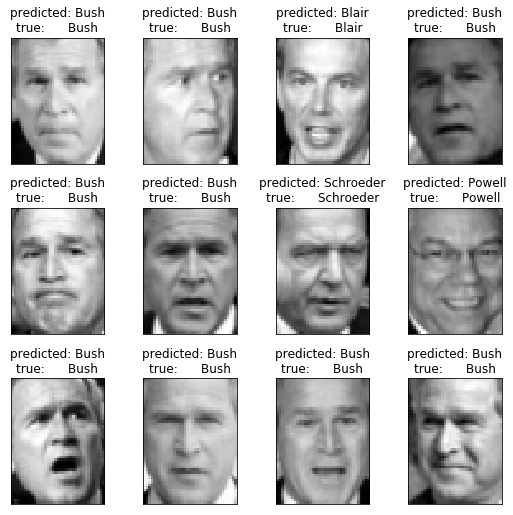
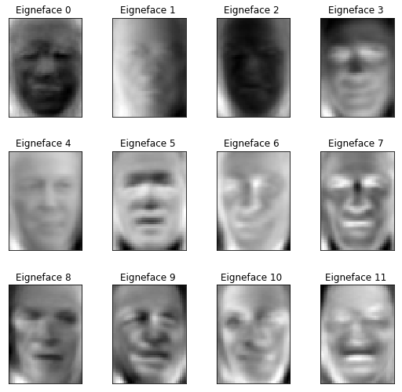

from time import time
import logging
import pylab as pl
import numpy as np
import matplotlib.pyplot as plt
# !pip install -U scikit-learn
from sklearn.model_selection import train_test_split
from sklearn.model_selection import GridSearchCV
from sklearn.datasets import fetch_lfw_people
from sklearn.metrics import classification_report
from sklearn.metrics import confusion_matrix
from sklearn.decomposition import PCA
from sklearn.svm import SVCFacial Recognition with Principal Component Analysis
Using PCA to identify famous faces (Eigen Face)
ML
Computer Vision
Image Recognition
PCA
SVD
Scikit-Learn
Here we use principal component analysis (PCA) to reduce the number of features in a dataset of faces. The PC’s are then fed into a Support Vector Machine (SVM) classifier to classify the faces based on learned features.
The dataset used in this example is a preprocessed excerpt of the “Labeled Faces in the Wild”, aka LFW
Import the libraries
Here we import the libraries that we need for later
#Display progress
logging.basicConfig(level=logging.INFO, format='%(asctime)s %(message)s')Get the data
Here we pull in the data and store it in numpy arrays
#Download the data
lfw_people =fetch_lfw_people(min_faces_per_person=70, resize=0.4)
#Find out shape infomration about the images to help with plotting them
n_samples, h, w=lfw_people.images.shape
np.random.seed(42)
# for machine learning we use the data directly (as relative pixel
# position info is ignored by this model)
X = lfw_people.data
n_features = X.shape[1]
# the label to predict is the ID of the person
y = lfw_people.target
target_names = lfw_people.target_names
n_classes = target_names.shape[0]
print ("Total dataset size:")
print ("n_samples: %d" % n_samples)
print ("n_features: %d" % n_features)
print ("n_classes: %d" % n_classes)
print ("Classes: %s" % target_names)Downloading LFW metadata: https://ndownloader.figshare.com/files/5976012
2019-07-19 05:21:21,839 Downloading LFW metadata: https://ndownloader.figshare.com/files/5976012
Downloading LFW metadata: https://ndownloader.figshare.com/files/5976009
2019-07-19 05:21:28,215 Downloading LFW metadata: https://ndownloader.figshare.com/files/5976009
Downloading LFW metadata: https://ndownloader.figshare.com/files/5976006
2019-07-19 05:21:29,542 Downloading LFW metadata: https://ndownloader.figshare.com/files/5976006
Downloading LFW data (~200MB): https://ndownloader.figshare.com/files/5976015
2019-07-19 05:21:31,138 Downloading LFW data (~200MB): https://ndownloader.figshare.com/files/5976015Total dataset size:
n_samples: 1288
n_features: 1850
n_classes: 7
Classes: ['Ariel Sharon' 'Colin Powell' 'Donald Rumsfeld' 'George W Bush'
'Gerhard Schroeder' 'Hugo Chavez' 'Tony Blair']#Lets look at the data to see what they look like
pl.figure
for i in range(0,3):
pl.subplot(1,3,i+1)
pl.imshow(X[i].reshape((h,w)), cmap=pl.cm.bone)
pl.title(target_names[lfw_people.target[i]])
pl.xticks(())
pl.yticks(())

##Split Data (Test|Train) Here we split the data into a testing and train set
X_train, X_test, y_train, y_test =train_test_split(X,y, test_size=0.25, random_state=42)
y_test.dtypedtype('int64')##Do PCA and Dimensionality Reduction on Data Now we compute the PC’s using PCA
# Compute a PCA (eigenfaces) on the face dataset (treated as unlabeled
# dataset): unsupervised feature extraction / dimensionality reduction
n_components = 250
print("Extracting the top %d eignefaces from %d faces" % (n_components, X_train.shape[0]))
#Initiate a time counter (kinda like tic toc)
t0=time()
#Here we take the training data and compute the PCs
pca=PCA(n_components=n_components, whiten=True).fit(X_train)
#Print the time it took to compute
print("Done in %0.3fs" % (time()-t0))
#Reshape the PCs to the image format
eigenfaces =pca.components_.reshape((n_components,h,w))
pl.figure
for i in range(0,3):
pl.subplot(1,3,i+1)
pl.imshow(eigenfaces[i], cmap=pl.cm.bone)
pl.title("Eigenface PC- %d" % (i+1))
pl.xticks(())
pl.yticks(())
# cbar = pl.colorbar()
# cbar.solids.set_edgecolor("face")
# pl.draw()
# print(pca.explained_variance_ )
# print(pca.explained_variance_ratio_)
Extracting the top 250 eignefaces from 966 faces
Done in 0.399s
Look at the top PC’s
Here we’re going to plot the top PCs identified
top_pcs=21
plt.figure( figsize=(9, 3))
plt.subplot(121)
plt.bar(np.arange(top_pcs),pca.explained_variance_[0:top_pcs])
plt.xlabel('PCs')
plt.ylabel('Var')
plt.subplot(122)
plt.bar(np.arange(top_pcs),pca.explained_variance_ratio_[0:top_pcs])
plt.xlabel('PCs')
plt.ylabel('Ratio')
np.shape(pca.explained_variance_)
Projecting the PCs
Now that we have the PCs (the vectors that account for the max variances) we can project the data down to the PCs. In this case they are the eigenfaces from above.
print("Projecting the input data on the eignefaces orthonormal basis")
t0=time()#tic
X_train_pca = pca.transform(X_train) #take the training data and project it to eigenfaces
X_test_pca = pca.transform(X_test)#take the test data and project it to eigenfaces
print("Done in %0.3fs" % (time()- t0)) #tocProjecting the input data on the eignefaces orthonormal basis
Done in 0.035s##Train a SVM Classification Model
So now that we have the most important features extracted out by PCA we can use those to train a classifier. The SVM classifier can then be used to predict who’s face is being presented
#Training
print ("Fitting the classifier to the training set")
t0 = time()
#These set parameters that we want to optimize. These are passed to GridSearch
#which uses the optimal paramters in the fitting classifier =clf
param_grid = {
'C': [1e3, 5e3, 1e4, 5e4, 1e5],
'gamma': [0.0001, 0.0005, 0.001, 0.005, 0.01, 0.1],
}
# for sklearn version 0.16 or prior, the class_weight parameter value is 'auto'
clf = GridSearchCV(SVC(kernel='rbf', class_weight='balanced'), param_grid)
clf = clf.fit(X_train_pca, y_train)
print ("done in %0.3fs" % (time() - t0))
print ("Best estimator found by grid search:")
print (clf.best_estimator_)Fitting the classifier to the training set
done in 39.016s
Best estimator found by grid search:
SVC(C=1000.0, cache_size=200, class_weight='balanced', coef0=0.0,
decision_function_shape='ovr', degree=3, gamma=0.001, kernel='rbf',
max_iter=-1, probability=False, random_state=None, shrinking=True,
tol=0.001, verbose=False)/usr/local/lib/python3.6/dist-packages/sklearn/model_selection/_split.py:1978: FutureWarning: The default value of cv will change from 3 to 5 in version 0.22. Specify it explicitly to silence this warning.
warnings.warn(CV_WARNING, FutureWarning)#Testing the classifier
print ("Predicting the people names on the testing set")
t0 = time()
y_pred = clf.predict(X_test_pca)
print ("done in %0.3fs" % (time() - t0))
print (classification_report(y_test, y_pred, target_names=target_names))
print (confusion_matrix(y_test, y_pred, labels=range(n_classes)))
Predicting the people names on the testing set
done in 0.125s
precision recall f1-score support
Ariel Sharon 0.64 0.69 0.67 13
Colin Powell 0.75 0.90 0.82 60
Donald Rumsfeld 0.82 0.67 0.73 27
George W Bush 0.91 0.92 0.91 146
Gerhard Schroeder 0.87 0.80 0.83 25
Hugo Chavez 0.80 0.53 0.64 15
Tony Blair 0.82 0.78 0.80 36
accuracy 0.84 322
macro avg 0.80 0.76 0.77 322
weighted avg 0.84 0.84 0.84 322
[[ 9 1 1 2 0 0 0]
[ 1 54 2 2 0 1 0]
[ 2 3 18 3 0 0 1]
[ 1 6 1 134 1 1 2]
[ 0 2 0 1 20 0 2]
[ 0 4 0 2 0 8 1]
[ 1 2 0 3 2 0 28]]##Visualizing Results Now that we’ve trained and tested the SVM to classify faces lets visualized the results
#Create a helper function to look at the pictures
def plot_gallery(images, titles, h, w, n_row=3, n_col=4):
"""Helper function to plot a gallery of portraits"""
pl.figure(figsize=(1.8 * n_col, 2.4 * n_row))
pl.subplots_adjust(bottom=0, left=.01, right=.99, top=.90, hspace=.35)
for i in range(n_row * n_col):
pl.subplot(n_row, n_col, i + 1)
pl.imshow(images[i].reshape((h, w)), cmap=pl.cm.gray)
pl.title(titles[i], size=12)
pl.xticks(())
pl.yticks(())
# plot the result of the prediction on a portion of the test set
def title(y_pred, y_test, target_names, i):
pred_name = target_names[y_pred[i]].rsplit(' ', 1)[-1]
true_name = target_names[y_test[i]].rsplit(' ', 1)[-1]
return 'predicted: %s\ntrue: %s' % (pred_name, true_name)
prediction_titles = [title(y_pred, y_test, target_names, i)
for i in range(y_pred.shape[0])] #Now print out preductions
# prediction_titles=(X_test, prediction_titles,h,w)
plot_gallery(X_test, prediction_titles, h, w )
#Plot the eignefaces
eigenface_titles =["Eigneface %d " % i for i in range(eigenfaces.shape[0])]
plot_gallery(eigenfaces, eigenface_titles, h, w)
plt.show()

Archived
Project Archive Note:
This project is archived.
Please note that library and framework versions may be outdated.
Last updated:
- April 2025